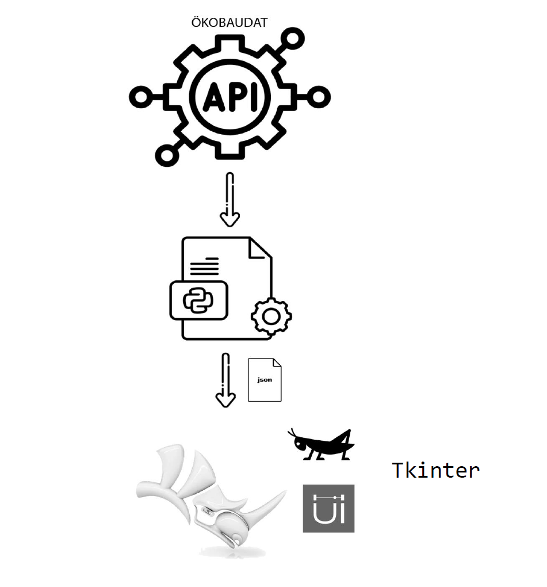
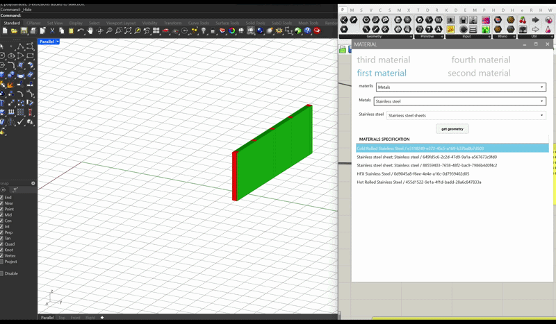

This project presents a Python-based Life Cycle Assessment (LCA) tool that integrates the ÖKOBAUDAT API with Grasshopper to enable real-time environmental evaluation during early-stage design. By automating the retrieval and processing of Environmental Product Declaration (EPD) data, the tool allows architects and engineers to quickly assess key metrics such as Global Warming Potential (GWP) and energy demand. The system transforms complex LCA workflows into an interactive, parametric process, significantly reducing manual calculations and supporting informed, sustainability-driven design decisions from the conceptual phase onward.
▾

